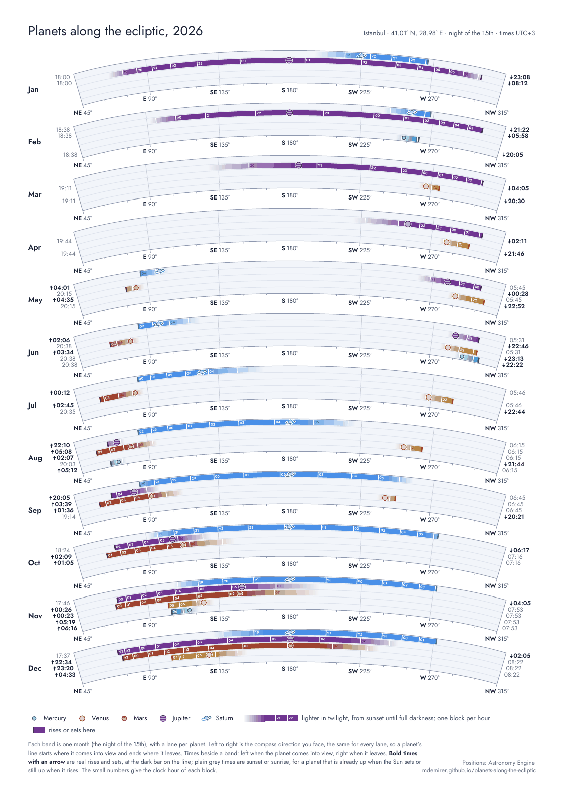

How to read it
Each band is one night. Left to right is the compass direction you face, the same for every band. Every planet has its own lane, Mercury at the bottom and Saturn at the top.
A planet's line starts where it comes into view and ends where it leaves. It is lighter in twilight and solid in full darkness, with a white cut at every full hour. The planet symbol marks the best moment to look: its highest point in a dark sky.
Times beside a band show when each planet comes into view and leaves. Bold times with an arrow are real rises and sets; grey times are sunset or sunrise.
You get three A3 PDFs: one page with the 15th of every month, two pages with the 1st and 15th, and two pages with every week.